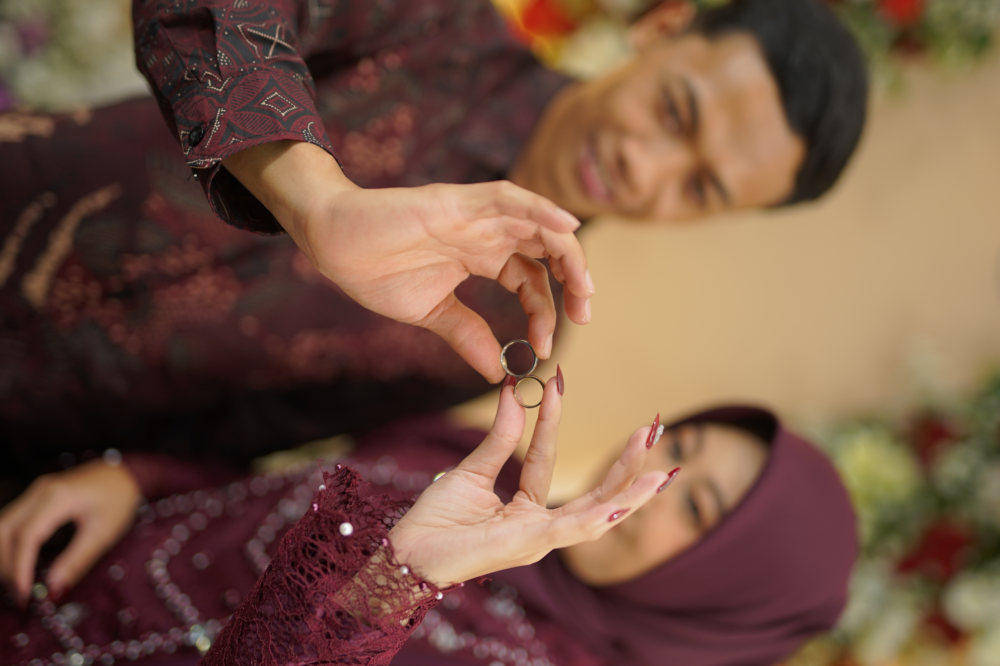

Mempelai Pria
Supriyadi
Putra dari Bapak Dardiri & Ibu Yatini

The Wedding of
Minggu, 24 Mei 2026
Undangan Pernikahan
Kami mengundang Bapak/Ibu/Saudara/i untuk menghadiri acara pernikahan kami
“Dan di antara tanda-tanda (kebesaran)-Nya ialah Dia menciptakan pasangan-pasangan untukmu dari jenismu sendiri, agar kamu cenderung dan merasa tenteram kepadanya.”
QS. Ar-Rum: 21
Dengan memohon rahmat dan ridho Allah SWT, kami menyatukan hati dalam ikatan suci pernikahan.
Mempelai Pria
Putra dari Bapak Dardiri & Ibu Yatini
Mempelai Wanita
Putri dari Bapak Mimbar & Ibu Sutrimah
Momen perjalanan kami yang diabadikan dalam bingkai kenangan.
Perjalanan kasih kami yang membawa pada hari bahagia ini.
Awal mula perkenalan kami yang tak terduga, namun menjadi awal dari segalanya.
Kami memutuskan untuk berjalan berdampingan dan saling melengkapi.
Sebuah langkah pasti untuk mengikat janji suci dan merencanakan masa depan bersama.
Tidak semua pertemuan disertai tanda yang gemilang. Sebagian hadir dengan sederhana, hampir tak terasa, namun diam-diam Tuhan sedang menuliskan takdir terbaik-Nya. Begitulah kisah ini bermula — tenang, namun sarat makna.
Supriyadi dan Hayu Kartikasari dipertemukan bukan oleh kebetulan, melainkan oleh waktu yang telah dipersiapkan dengan cermat. Di antara ragu yang manusiawi dan harapan yang perlahan tumbuh, mereka menemukan bahwa hati yang tepat akan selalu membawa pulang ketenangan.
Cinta itu tidak datang dengan gemuruh, tetapi dengan keyakinan yang semakin hari semakin dalam. Dalam doa-doa yang lirih, nama satu sama lain mulai disebut, memohon agar langkah yang berbeda arah akhirnya disatukan dalam ridha-Nya.
Ada jarak yang menguji, ada sunyi yang mengajarkan arti menunggu, namun setiap proses justru menguatkan satu keputusan: bahwa cinta sejati bukan tentang siapa yang datang paling cepat, melainkan siapa yang tetap tinggal.
Dan kini, pada 24 Mei 2026, dua hati itu memilih untuk bersaksi di hadapan Tuhan dan keluarga, mengikat janji bukan hanya untuk hari ini, tetapi untuk seluruh musim kehidupan yang akan datang — dalam cinta yang tumbuh karena iman, dan bertahan karena doa.
Menuju momen yang kami nantikan — Minggu, 24 Mei 2026
Jalan Watuagung, Rembes
Watuagung, Kab. Semarang, Jawa
Tengah
Jalan Watuagung, Rembes
Watuagung, Kab. Semarang, Jawa
Tengah
Mohon konfirmasi paling lambat 10 Mei 2026 agar kami dapat menyiapkan hidangan dengan baik.
Berikan doa dan ucapan terbaik untuk kedua mempelai.
Bagi yang berkenan memberikan tanda kasih, dapat ditransfer ke rekening berikut:

Bank BCA
3201274981
a.n. Supriyadi
Bank BNI
1166990603
a.n. Hayu Kartikasari